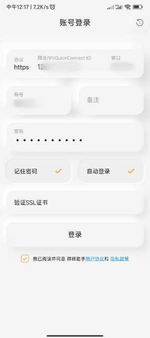
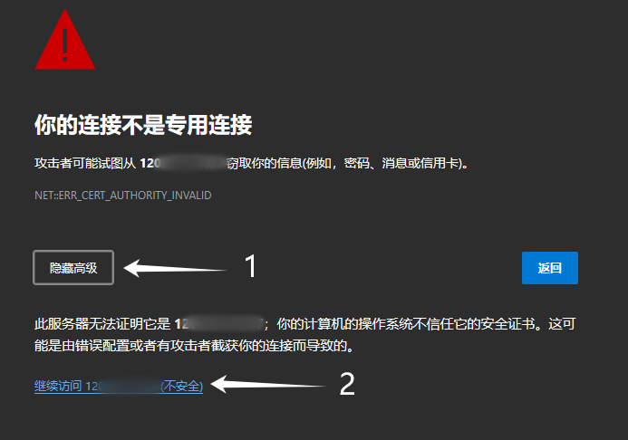
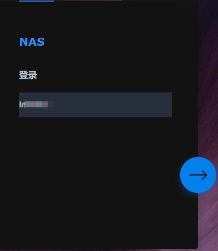
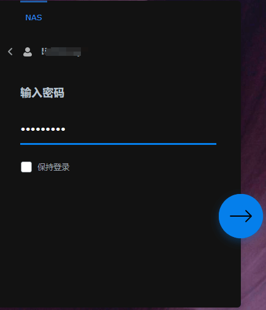

群晖Synology
下载&安装
pve8.1安装黑群晖 | pve硬盘直通 | 群晖使用nvme做存储空间 | pve安装 | 群晖nas_哔哩哔哩_bilibili
https://www.bilibili.com/video/BV1ND4y1G7Xb/)
登录
移动端操作
下载 Synology Assistant 移动应用程序，安卓系统直接在应用商城搜索“群晖助手”，苹果系统在App store搜索，出现的可能是叫“派派助手”（是一样可用的）。

打开 Synology Drive App，输入如下地址和账号密码：
查看
这里重点留意文件夹的查看权限，现在的NAS是打开家目录的，所以会有【home】和【homes】的两个文件夹位置，
- home：是按用户，自己的文件夹(一遍只能自己看到)
- homes：是管理员可以看到全用户的文件类
上传
下载
浏览器端操作
输入外网IP和端口号，
  
用户
创建

分组
权限
针对用户设置权限
针对组别设置权限
home和homes
用户在homes会有以<用户名>命名的用户文件，在home显示<用户名>里有的文件夹；即这两个位置是相同的（只是显示效果不一样，如下图）

正常用户只能看到自己的文件，即只显示home及其用户的文件内容；

存储池和存储空间
存储池
迁移
扩容
参考
Frp内网穿透
群晖 DSM 7 穿透指南 (frpc) | SakuraFrp 帮助文档 (natfrp.com)
云服务器托管项目
Photo